Longren Antarctic Newsletter #11 - 01.03.2026 ------------------------------ Hello friends and family, Greetings from the South Pole! I made it to the farthest south one can go at the end of January. Since arriving, I've been hard at work at the observatory and settling into station life. Leaving Colorado, USA, it took three flights on commercial airplanes to reach New Zealand. From there, two flights on military aircraft across the Southern Ocean and the Antarctic continent brought me all the way south to the Amundsen- Scott South Pole Station. 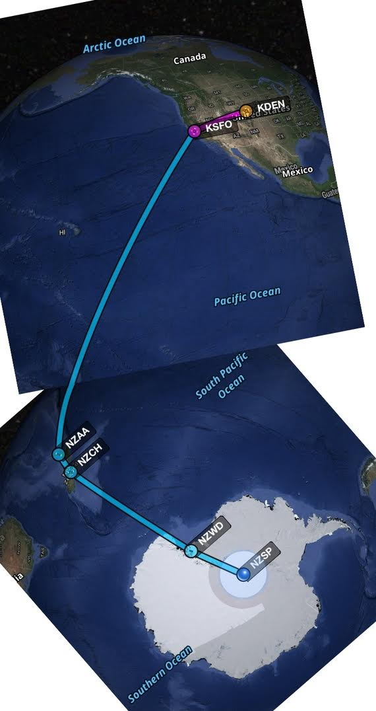 The flight path totaling 17,979 km (11,172 mi) from Denver, Colorado, USA to the South Pole. Arriving at McMurdo Station for the second time in the previous five months, I got the chance to overlap with my partner, Tasha. She had stayed at McMurdo working in the laboratory since we had deployed there together last September. After the shortest two days of my life, I was excited to board an LC-130 headed for the South Pole. It was my first time flying on an LC-130, the ski- equipped version of the Boeing C-130, a military aircraft that has been flying since 1954. 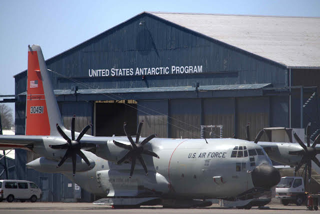 An LC-130 parked in Christchurch, New Zealand. The flight to the South Pole was a cramped one. Not only did I have every pocket of my jacket and bibs stuffed with things I couldn't fit in my 100 lbs (45 kg) of luggage allowance, all of us had to wear our big jackets and boots while being crammed toe-to-toe and shoulder-to-shoulder on the plane. Nonetheless, it was a flight going south, and one with a beautiful view at that. 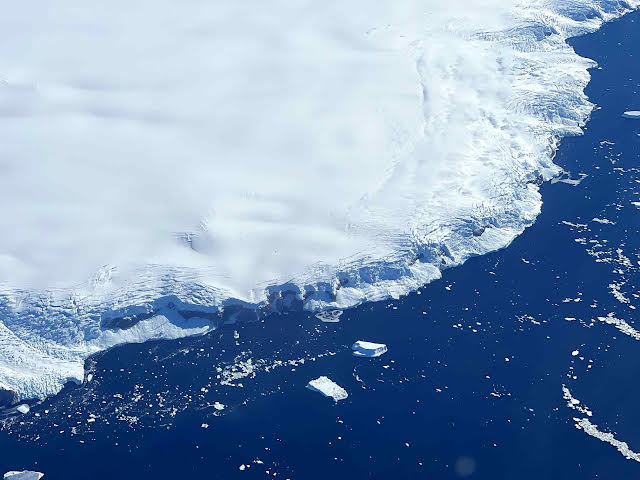 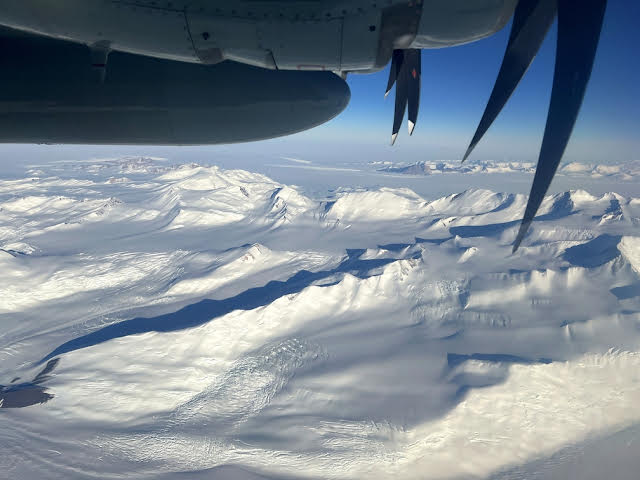 The coast of Antarctica flying from New Zealand to McMurdo Station (top) and the Transantarctic Mountains on the way to the South Pole (bottom). Arriving at the South Pole was something else. It's a place that I've thought a lot about, heard about from many people, and seen so many photos of. It's a place that I feel I've been to, while not ever having been. Stepping off the plane was surreal, not because of where I was, but because I felt like I had been here before. 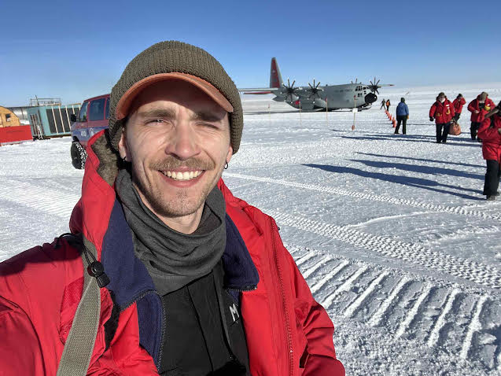 The obligatory arrival selfie at the South Pole. While it might look like I arrived around midday, I took that selfie at 11:18 pm. It was close to the middle of summer with the sun at its peak. Since then, the sun has been getting lower and lower in the sky. The only sunset of the year at the South Pole will be in the middle of March. As I write this, we have an ambient temperature of -51°C (-59°F), with a -67°C (-89°F) windchill. It's currently fall here and will only be getting colder from now on as the sun continues to set. Compared to McMurdo, which is on the coast, the South Pole is a difficult place to breathe. At an elevation of 2,840 meters (9,318 feet), there's not much air. That's made worse by the Earth's spin, which pushes the air away from its poles, much like a merry-go-round. That leaves the South Pole with what feels like 3,200 meters (10,500 feet) of elevation worth of air. I definitely felt out of breath my first days at the station. 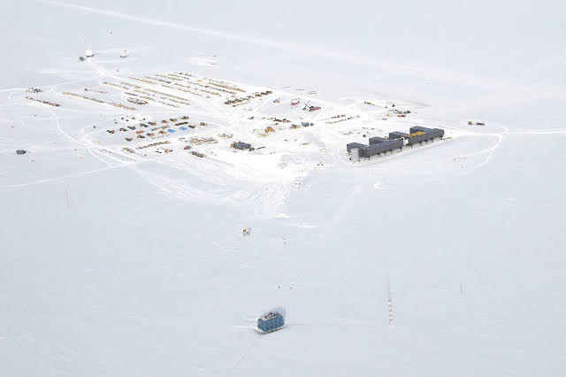 The elevated Amundsen-Scott South Pole Station surrounded by outbuildings and storage. The blue NOAA building is at the bottom (A. Williams). After getting to sleep past midnight my first night, I hit the ground running and went to work bright and early my first morning. My office is the Atmospheric Research Observatory (ARO), an outbuilding located a quarter-mile (0.4 km) from the main elevated station. At the observatory, there are roughly 40 instruments that require constant monitoring and maintenance. There's no running water, but otherwise ARO is a cozy little place to work. 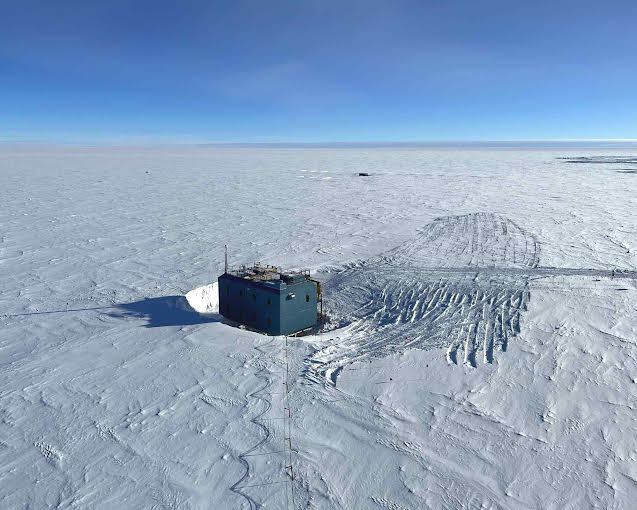 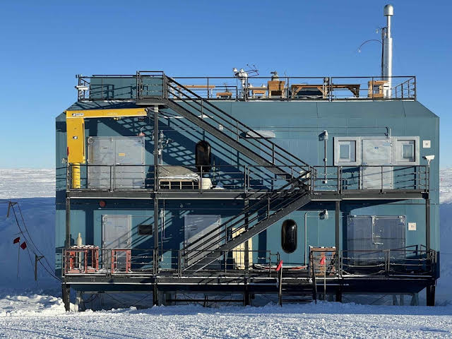 The Atmospheric Research Observatory (ARO) as viewed from the nearby meteorology tower (top) and from the front (bottom). I work with a great team here at the South Pole. Three colleagues of mine were here for the summer making sure that operations are running smoothly. There was a lot to do in the summer to get the observatory ready for the winter. From sending and receiving cargo to removing snow from beneath the building, we kept busy and had fun doing so. 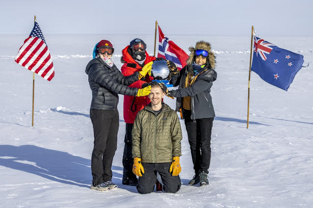 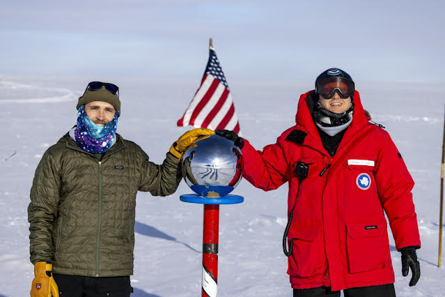 The summer NOAA team (top) and just Mike and I, the two NOAA winterovers (bottom), posing at the ceremonial South Pole. Juli and Janelle departed at the beginning of February, leaving just Mike and I as the NOAA crew for the long winter. I've greatly enjoyed working with Mike for the last month and am looking forward to the upcoming winter, where we will keep the observatory running together. 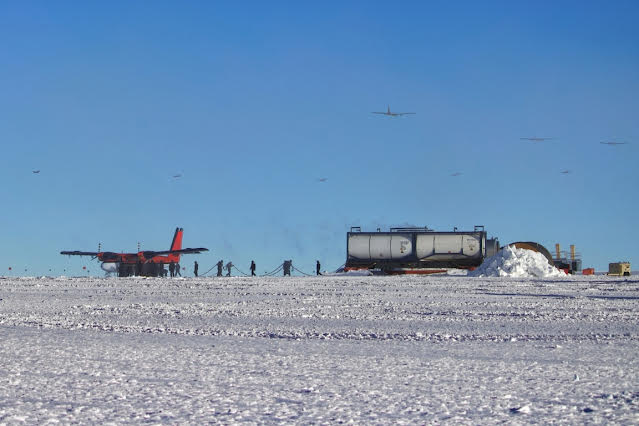 The final plane for the summer, a Twin Otter, is fueled while its twin departs ahead of it. Two days ago, the last plane departed the South Pole for the season. The Pole won't see another plane until late October, unless an emergency medical evacuation is needed. Until then, the only faces I will see are those of my fellow winterovers. There are 45 of us total stationed here for the winter. I'm excited for this winter at the South Pole. I know that there are a number of challenges ahead, but I am optimistic that we will handle them in good fashion. There are stars and aurora ahead too that I am looking forward to seeing and to share with you. Stay tuned, more to come from the bottom of the world. Thanks for reading, Luke 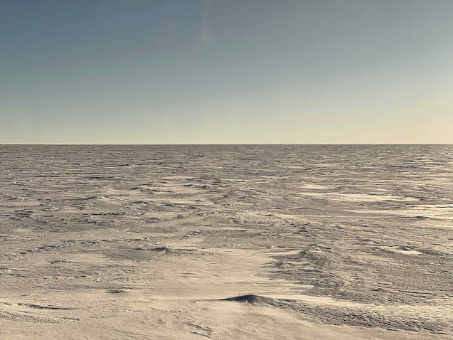 ------------------------------ ------------------------------ Previous newsletters can be found on my website. |